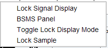
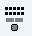
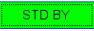

bsmsdisp
NAME
bsmsdisp – Opens the BSMS (Bruker Smart Magnet control System) control panel.
The BSMS provides an overview of the most important features and states of the shim system and magnet. It can be opened in four different ways:
- from the TopSpin menu clicking Acquire | Shim | Shim manually using BSMS (bsmsdisp):
- with right click in the Lock display in the Acquisition Status Bar | BSMS panel:

- clicking the BSMS icon  in the TopSpin menu bar
- or by typing bsmsdisp in the command line.
The BSMS Control Suite main window is opened:
The BSMS Main window tab offers the most prominent functions to control the magnet and the shim system:
- AUTO – Automatic lock, phase, power, gain and shim procedure
- LOCK – Switch lock on / off, lock phase, lock power, lock gain
- SAMPLE – LIFT or SPIN the sample on/off, Measure (show the actual spin rate in Hz), Rate (show/set the intended spin rate), Always locked shown green (is shown if the lock is on), Lock lost shown red (shows if the lock is lost)
- SHIM – displays a subset of currently available shim gradients
- The control window offers the possibility to change the respective values using the control knob, in steps using the stepsize or entering absolute values manually.
- The STD BY button  offers the possibility to deselect the settings.
- Shut down BSMS – is recommended before hardware turn-off
- Config. – offers the possibility to show the BSMS window in TopSpin or in an external window.
- The status bar at the bottom of the BSMS window shows the status of the current sample (down, missing or up) and the current shim coil temperature.
The tab Lock/Level offers the possibility to change advanced lock parameters (e.g., AUTO, LOCK, LOOP, SWEEP, HELIUM LEVEL, SHIM COIL TEMPERATURE).
The tab Shim offers the possibility to change advanced LOCK & SPIN parameters and shows the complete set of shim parameters, dependent from the shim system.
The tab Autoshim offers the possibility to turn the shim on or off and to select the shim gradients and their interval to be used during autoshim.

Please note that all shim coordinates are inactive if their absolute value is set to 0. To activate shims for autoshim you need to activate the absolute value higher than 0.
The tab Service offers some more possibilities to control and check the BSMS, e.g. Helium Level and coil temperature settings.
The tab Service offers the following functionalities:
- Helium Level – check the helium level and set Alarm level
- Unlock BSMS
- Check lock of BSMS – status check
- BSMS logfile – show logfile
- Coil temperature settings – change Maximum / Minimum coil temperature
The tab Log shows current error messages, error messages history and info messages which can be cleared or printed:
The Help tab refers to detailed information about the BSMS functionalities.
See also